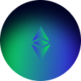
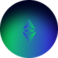

Tentang Kita
VPDLS merupakan platform akademik untuk siswa Sekolah Dasar. Platform ini mempunyai beberpa fitur yang interaktif. VPDLS juga mempunyai inovasi pembelajaran yang modern yang menakankan pada pemanfaatan media teknologi dari berbagai platform pembelajaran yang berkembang saat ini.
Penggunaan Platfrom tersebut memberikan pengalaman belajar siswa dalam mengembangkan kemampuan kognitif dan kemandirian belajar siswa Sekolah Dasar. Berbagai fitur yang dikembangkan pada paltform VPDLS juga memberikan kesempatan kepada pengajar atau praktisi dalam mengembangkan kemampuan profesional sebagai pengajar dengan membuat kelas yang paling ideal dan efektif untuk siswa Sekolah Dasar.
Pengalaman
Background pengajar atau praktisi yang profesional sesuai dengan bidang pendidikan guru sekolah dasar.
Dukungan
Platform ini memberikan dukungan dalam menyelesaikan persoalan dengan mudahnya menghubungi melalui kelas yang tersedia.

 Fitur VPDLS
Fitur VPDLS
Fitur platform VPDLS memberikan kemudahan bagi Siswa Sekolah Dasar dalam belajar, siswa dapat mencari informasi yang dibutuhkan melalui platform ini.
Berbagai video pembelajaran interaktif dengan kualitas terbaik disertai animasi yang sengaja dibuat untuk menumbuhkan kemampuan kognitif dan kemandirian belajar siswa.
Kelas yang dilengkapi dengan latihan soal dan materi menarik dapat memeberikan pengalaman kepada siswa dan dilengkapi quiz dengan media terbaik di dalamnya.
Siswa diberikan kesempatan untuk memberikan persoalan yang dialami dengan cara berdiskusi dan dapat secara pribadi mengkonsultasikan persoalan melalui fitur chat.
3 Keunggulan dalam Menggunakan Platform VPDLS 
Gabung Kelas Sekarang
Bersama VPDLS
Platform yang memberikan pengalaman belajar siswa dengan metode lebih modern dan interaktif dengan berbagai macam fitur yang menarik.